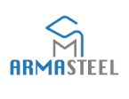

Twin 5-Axis Welding Robots — 16-Meter Linear Travel
Complete turnkey engineering, 3D kinematic modeling, fabrication, and programming of twin 5-axis welding robots with real-time infrared seam tracking and 16-meter linear gantry travel for Armasteel.
The Industrial Challenge
Armasteel required an automated welding cell capable of laying continuous, high-integrity weld beads along ultra-long structural steel girders (up to 16 meters), maintaining absolute precision across variable weld joints.
Deployed Engineering & Method
RAFI Robotiques et Machineries engineered a bespoke 5-axis robotic kinematic system mounted on an extended 16-meter rigid track. We integrated advanced infrared closed-loop sensors dynamically syncing feed rate to weld geometry in real time, accompanied by an intuitive, hardened industrial HMI.
Measurable Result
Dual synchronized robots deliver an industry-leading 16-meter operating envelope with zero manual rework. The installation dramatically multiplied plant throughput across heavy structural, naval, and automotive fabrications.